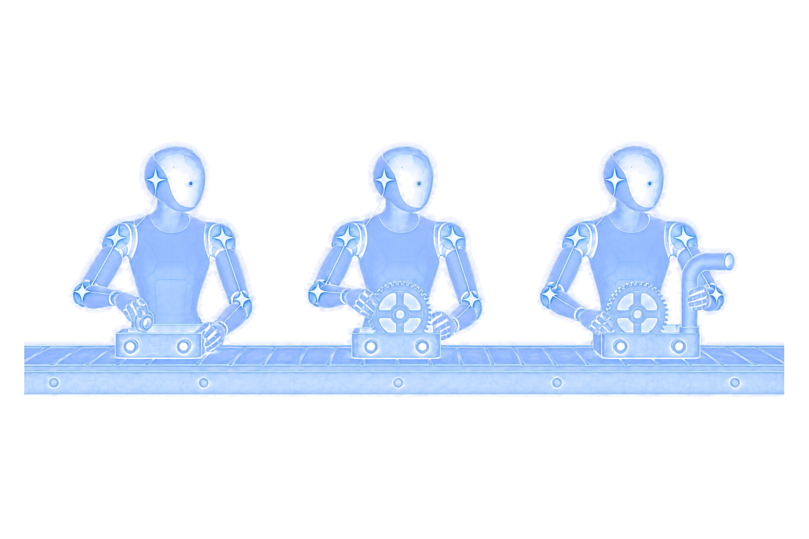
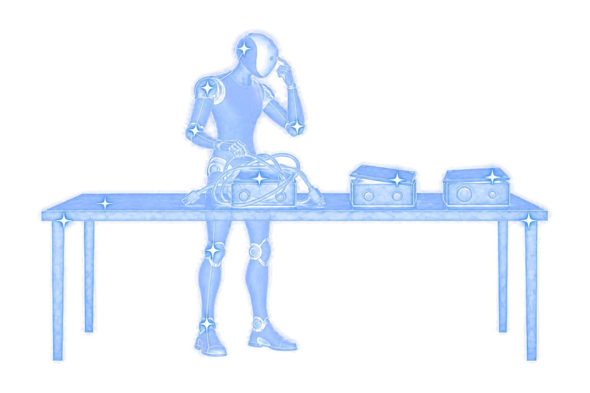
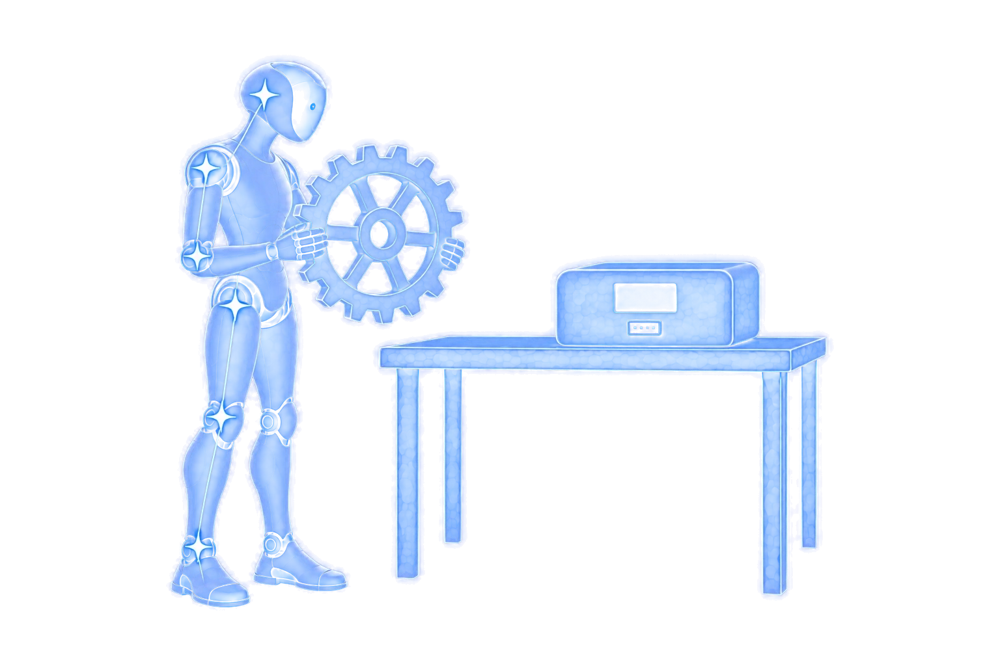
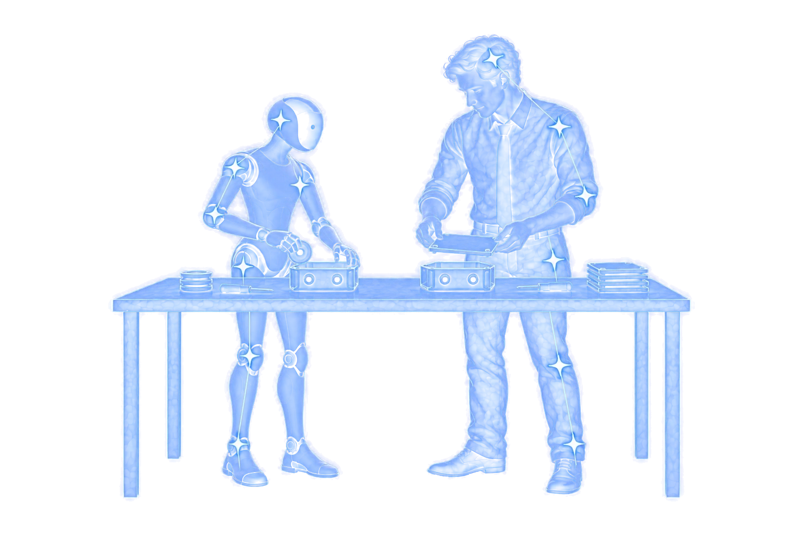
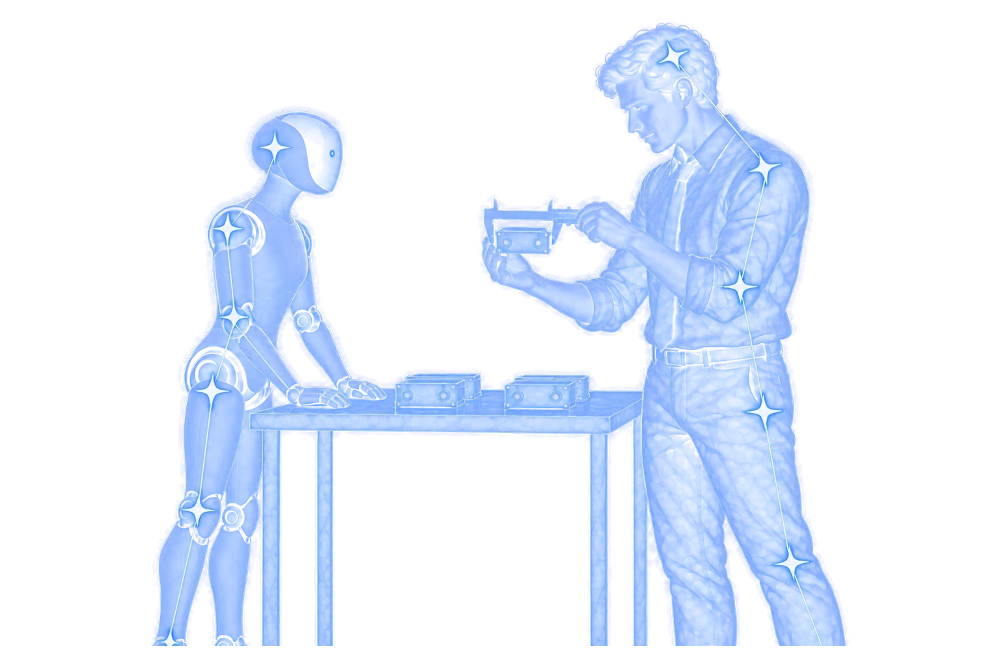

A faster way to build software is taking shape.

“Within weeks, hundreds of engineers were shipping at a pace that would have seemed impossible a year ago.”
Intercom · firsthand account of adopting agent-first engineering
Software factories
Bring agents into your software development life cycle.
Start with what you have. Increase autonomy as confidence grows.
The problem

“Within weeks, hundreds of engineers were shipping at a pace that would have seemed impossible a year ago.”
Intercom · firsthand account of adopting agent-first engineering

Poor code design can turn early speed into a standstill as agents struggle with mounting complexity. When agents ignore the product invariants, inconsistent behavior erodes customer trust.

Models, frameworks, and agent harnesses keep changing. Will your software factory be out of date as soon as you've put it in place?
The solution

Break your software development lifecycle into tasks and work through them alongside an agent. Correct mistakes as they happen and refine the process together. As individual tasks prove dependable, promote them to more hands-off automation.
Define your coding conventions, architecture, and product invariants. Clarify each task together before agents begin implementation.

Build tests, review, and hands-on QA into your delivery process. Check the running software against agreed expectations – not the agent’s claim that it’s done.
Stable patterns are emerging: plain-English skills, shared project context, and established build and delivery checks. Build around portable practices, so your software factory can adapt as technology changes.
From possibility to product
Product direction. AI behavior. Agentic engineering.

“Building a multi-agent therapist training simulator from scratch is a massive undertaking. Arcturus Labs provided the foundational architecture, a sophisticated strategy, and hands-on work that gave us the ability to train and refine our Patient, Coach, and Evaluator agents into a reliable, evidence-based training platform.”
“The strategic assessment from Arcturus Labs was a turning point for our product. By implementing their 'participatory experience' model, we are empowering our users to guide the AI, leading to higher confidence and much better data outcomes.”
“Arcturus Labs took a complex, email-driven process and turned it into a systematic, AI automated workflow. And the research agent cut through the noise of hospital shortages, and was able to identify substitutes in a fraction of the time it would take staff.”
“If you have the chance to bring him in for a training with your team then I would definitely recommend it and I know my colleagues would too.”